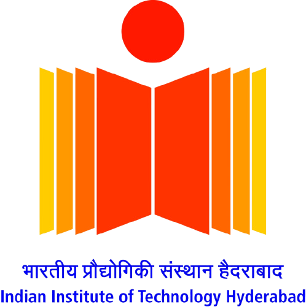
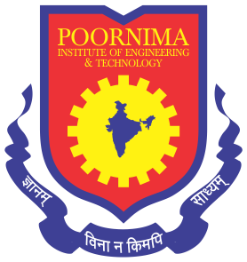

About Vikas
Ph.D. Research Scholar at Indian Institute of Technology Hyderabad specializing in Environmental Engineering. My work is to understand Fate and Transport of Pollutant into Deep Oceans.
Research Focus
Specializing in Environmental Engineering with expertise in Environmental Modelling. Currently research interest:
- Persistence, Bioacculation and Long Range Transport
- Biogeochemistry
- Deep Oceans
Technical Skills
Environmental Modelling
Machine Learning
QGIS
Python
Matlab
R
Educational Qualifications

Ph.D. (Environmental Engineering)
Indian Institute of Technology, Hyderabad
2022-Present

M.Tech (Environmental Engineering)
Maulana Azad National Institute of Technology, Bhopal
2018-2020

B.Tech (Civil Engineering)
Poornima Institute of Engineering and Technology, Jaipur
2014-2018
Certifications
Convention on Long-range Transboundary Air Pollution
UNCC: e-Learn
2024National Implementation Plans and the Stockholm Convention on Persistent Organic Pollutants
UNCC: e-Learn
2024AI, Machine Learning, Deep Learning, Computer Vision, NLP & Chat GPT with Python
Educ Labs
2024GIS for Climate Action
ESRI
2024Supervised Machine Learning: Regression and Classification
Coursera
2023Nature-Based Solutions for Cresting Circular Cities
Cap-NET UNDP
2022Integrity Basics: Understanding Corruption in Water and Sanitation
Cap-NET UNDP
2022Academic Achievements
UGC NET and JRF Qualified (Environmental Science)
2022
Gate Qualified (Civil Engineering)
2021 & 2018
Gate Qualified (Environmental Engineering)
2021
Best Summer Internship Award
2017-2018
Silver Medal for Academic Section Topper
2016-2017